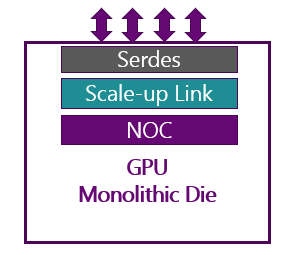
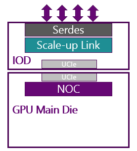
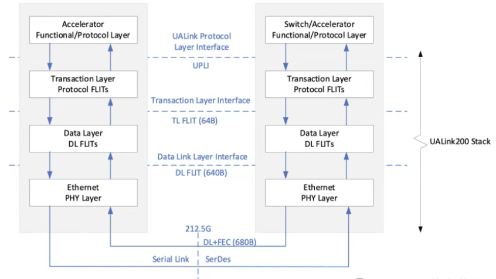
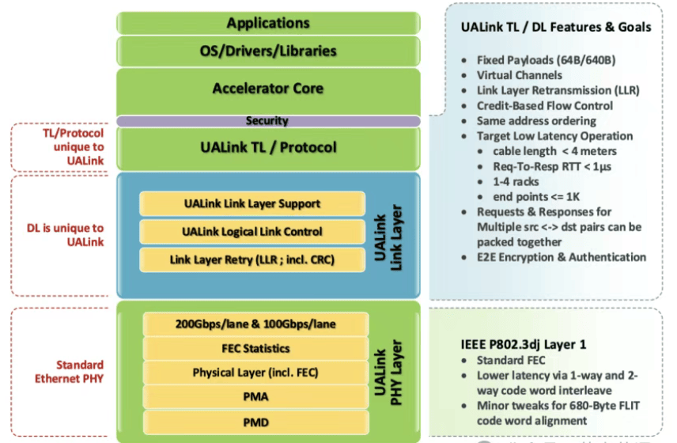
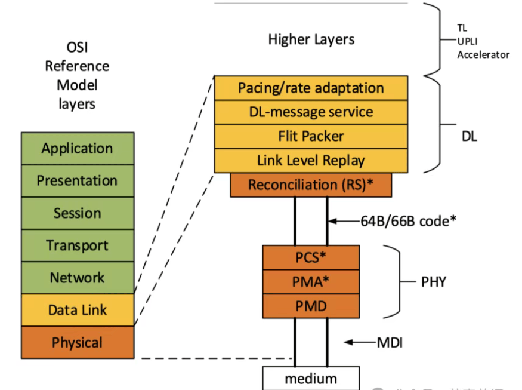
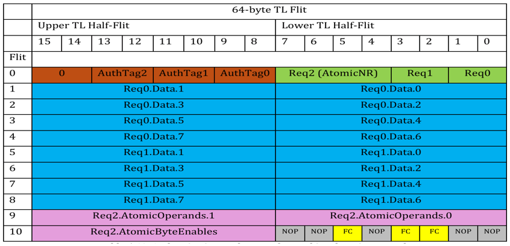
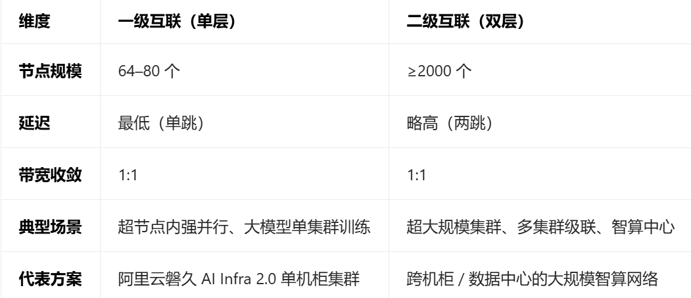

链路层与事务协议 ¶
本章介绍 Scale-Up 域的互联协议体系，涵盖链路层与事务层的技术选型与产业态势。当前 Scale-Up 互联正处于 " 百花齐放 " 的竞争窗口期——私有协议（NVLink、UB 灵衢、HSL）与开放标准（UALink、ESUN、SUE、Eth-X 等）并行演进，选型决策需要在延迟、带宽、内存语义、传输可靠性、互联规模、生态兼容性与成本之间寻找帕累托最优。若把问题放回系统目标，就会发现协议竞争的真正对象并不是“谁的报文格式更优雅”，更不是“谁的端口速率更高”，而是哪条协议路线更有能力把更多高价值通信稳定留在受控域内，把多个芯片组织成同一个低时延、低抖动、可维持内存语义的高带宽协同域；这也是为什么本章更关心内存语义、保序、拥塞行为和可扩展边界，而不是只关心端口速率或单跳时延
Scale-Up 的边界与需求 ¶
与 Scale-Out 的分工 ¶
在智算中心网络中，Scale-Up 与 Scale-Out 并不是相互替代关系，而是围绕不同通信语义和不同扩展尺度进行分层协作：
| 维度 | Scale-Up | Scale-Out |
|---|---|---|
| 主要目标 | 在高带宽域内聚合更多加速器与显存 | 将多个节点或多个超节点继续横向扩展 |
| 典型规模 | 节点内到超节点内，通常小于千卡级 | 集群级到园区级，通常万卡以上 |
| 主体语义 | 内存语义（兼顾 DMA |
消息语义、队列 / 报文 / 流传输 |
| 时延目标 | 百 ns 到亚 us 级 | 数 us 到数十 us 级 |
| 保序约束 | 要求保序，端侧无排序能力 | 可接受乱序，由网卡完成重排序 |
| 转发路径 | 固定，由端侧路径规划 | 灵活，多路径动态负载均衡 |
| 拥塞控制 | 无拥塞控制算法，CBFC/PFC 保证无损 | PFC + ECN + DCQCN 等拥塞控制算法 |
| 网络丢包 | 要求无损传输，不依赖端到端传输层 | 可接受丢包，RDMA 有端到端重传 |
| 包长 | 命令包 <32B，数据包 ≤256B，可传输层拼包 | 长包为主（数据报文多 >2 KB） |
| 物理层 | 包含但不限于以太网 PHY，更注重延时与编码复杂度平衡 | 标准以太网物理层 |
| 数据链路层 | 基于 ID 查表路由，优化帧头（6–16B）或自定义格式，链路层重传 | 基于地址学习转发，标准帧头开销大，无链路层重传 |
| 传输层 | 无 | 复杂传输控制协议（TCP/IP） |
| 典型并行方式 | TP、EP | PP、DP |
| 常见拓扑 | 单层交换、低直径专用 Fabric | 两层 / 三层 Clos、Fat-Tree、Dragonfly |
如果把整个 AI 基础设施看成一个分层互联系统，那么 Scale-Up 负责把强耦合通信尽量留在 " 像单机一样快 " 的域内，Scale-Out 则负责把更多资源接进来。前者优化的是关键路径延迟与有效显存容量，后者优化的是总规模与全局调度弹性。
三类网络分层 ¶
业界常把智算中心网络进一步划分为前端网络、本地高性能网络和本地互联网络三类，其中 Type3 本质上就是 Scale-Up 的主战场：
| 维度 | Type1（前端网络） | Type2（后端网络 / Scale-Out） | Type3（本地网络 / Scale-Up） |
|---|---|---|---|
| 典型时延 | 100 us+ | <10 us | <1 us |
| 典型带宽 | >100G | >800G | >12T |
| 多租户特征 | 强 | 中 | 弱，通常单租户；逐渐出现多租户需求 |
| 语义特征 | 通用数据通信 | 高性能消息通信 | 内存语义、短帧、优化帧头（6B–16B |
| 最大链路长度 | 千米级 | 百米级 | 米级 |
| 设计重点 | 兼容性与安全性 | 大规模组网与利用率 | 极低时延、无损与细粒度传输 |
这也是为什么 Scale-Up 协议往往不会完全复用传统数据中心网络的设计哲学。它面对的不是 " 更多主机之间如何高效传文件 "，而是 " 更多加速器之间如何像共享本地显存一样协同工作 "。更进一步说，Scale-Up 的本质不是附属于计算系统之外的一张互联网络，而是计算系统内部组织方式的一部分：它决定哪些访问仍可被视作“域内协同”，哪些访问已经退化为跨域通信
协议栈分层与互联硬件 ¶
芯片内 / 间通信结构 ¶
超节点的核心特征在于通过高速无损互联技术构建大规模计算域。其互联体系遵循从微观到宏观的层次化结构，从芯片内部的片上网络到集群级的数据中心网络，形成了完整的互联技术栈。
芯片（Chip）通常由不同的芯粒（Die）组成，比如 CCD（Core Complex Die）和 IOD（I/O Die
有限的光罩尺寸越来越难以满足日益增长的算力需求，Scale-Up 的出现有效地以系统方式解决了显存带宽和容量的问题，但这往往需要较大的互联带宽来支撑。IOD 芯粒架构应运而生——通过将 I/O 功能集中到独立的 IOD 上，释放 CCD 面积给计算逻辑，同时为多条高速互联通道提供统一的物理出口。

➜
从单片 Die（左）到 IOD 芯粒架构（右）的演进。IOD 将 SerDes 和 Scale-Up Link 从 GPU Main Die 中剥离，通过 UCIe D2D 互联，释放计算 Die 面积并统一高速 I/O 出口。
不论是片上的 NoC 通信，还是 D2D、C2C 通信，都可以在逻辑上分为三层抽象：
- 物理层：负责定义互联的物理形态、连接拓扑与信号的电气特性（频率、电压等
） 。 - 链路层：负责定义数据如何进行高效可靠的传递，不负责理解数据的内容。
- 事务层：负责定义事务处理逻辑，比如读写请求、内存一致性等。
物理层 / 链路层 / 事务层 ¶
为了方便理解，我们通过一张表格描绘当前 NoC、D2D 和 C2C 三层通信在物理、链路和事务三层之上有哪些选择：
| 物理层 | 链路层 | 事务层 | |
|---|---|---|---|
| Die 内通信 | 自定义的金属走线 使用数字信号 |
NoC 网络 包含路由算法的定义 流控机制和数据包定义 |
片上总线协议，比如 AMBA AXI 和 AMBA CHI |
| Die 间通信 | - BoW (Bunch of Wires)：OCP 定义的简化的 die-to-die 互连物理层协议 - UCIe PHY：UCIe 的物理层规范 - 私有规范，比如 AMD Infinity Fabric PHY, Intel AIB/Foveros PHY |
UCIe D2D Adapter: 负责链路训练、管理、CRC 校验、重传机制 私有实现: AMD/Intel 的私有链路管理逻辑 |
私有实现: AMD Infinity Fabric Protocol ( 支持一致性 ) UCIe Protocol Layer: 承载 PCIe, CXL, 和其他原生流协议 (Streaming) |
| 片间通信 | - CEI: OIF 制定的高速电气 I/O 规范，包含 25.6G/56G/112G 等多种规范 - PCIe PHY: 遵循或参考 CEI - NVLink PHY: NVIDIA 私有 SerDes 实现 - 以太网 PHY: 如以太网光 / 电模块 |
PCIe Link Layer: 流量控制、ACK/NAK、数据包排序 CXL.io Link Layer: 复用 PCIe 的链路层 NVLink Link Layer: NVIDIA 私有链路管理和流控 Ethernet MAC Layer / RoCE |
PCIe Transaction Layer: 内存读写 (RW)、配置、消息 CXL (.cache & .mem): 实现缓存一致性、内存扩展 NVLink Protocol: GPU 间 P2P 内存访问、原子操作 TCP/IP, RoCEv2: 基于以太网的应用层协议 SUE-T: 基于以太网的 Scale-Up 传输协议 |
大模型对协议的重塑 ¶
从 TP 到 EP ¶
大模型训练和推理早期以稠密模型为主，通信重心主要落在张量并行（TP）驱动的 All-Reduce/Reduce-Scatter 上；而 2024 年之后，MoE 架构快速成为前沿模型的主流选择，通信热点显著转向专家并行（EP）驱动的 All-to-All。
| 维度 | Dense / TP 时代 | MoE / EP 时代 |
|---|---|---|
| 主导通信模式 | AllReduce、AllGather | All-to-All、动态专家路由 |
| 流量特征 | 同步、对称、可预测 | 稀疏、动态、非对称 |
| 带宽瓶颈 | 梯度同步 | token 路由与专家激活传输 |
| 时延敏感性 | 中等，可部分隐藏 | 极高，直接落在关键路径上 |
| 协议要求 | 高吞吐集合通信 | 高吞吐 + 极低尾延迟 + 动态负载均衡 |
这种变化的根本含义是：Scale-Up 协议不再只是 " 更快的 All-Reduce 网络 "，而是要支撑细粒度、动态、强时延敏感的通信行为。尤其在推理场景中，Prefill 更偏计算密集，而 Decode 更偏访存密集，任何一次跨加速器路由抖动都可能被层层放大，最终拖垮 token 吞吐。
并行方式与网络诉求 ¶
| 并行方式 | 典型通信 | 主要发生位置 | 对网络的主要要求 |
|---|---|---|---|
| TP | AllReduce | 单机或单超节点内 | 极高带宽、低时延、同步性 |
| EP | All-to-All | 超节点内优先 | 极高带宽、低尾延迟、动态调度 |
| PP | Send/Recv | 多节点之间 | 稳定点到点传输 |
| DP | AllReduce | 全局集群范围 | 大规模扩展能力与全局利用率 |
因此，Scale-Up 和 Scale-Out 的理想分工其实非常清晰：把 TP/EP 这类强耦合通信尽量收敛在高带宽域内，把 PP/DP 这类相对松耦合通信释放到更大规模的集群网络中。超节点存在的工程价值，也正体现在这种边界重新划分上。
Scale-Up 协议全景图 ¶
当前 Scale-Up 域的互联协议可以沿两个维度划分：技术路线（总线类 / 以太类 / 专有互联）与开放程度（封闭私有 / 准开放 / 完全开放标准
| # | 协议 | 主导方 | 物理层 | 链路层 | 事务层 | 组网规模 |
|---|---|---|---|---|---|---|
| 1 | NVLink | NVIDIA | 私有 SerDes | 自定义 Flit | 内存语义 | 单层，≤576 |
| 2 | Infinity Fabric | AMD | 私有 SerDes | 自定义 Flit | 内存语义 | 单层，≤16 |
| 3 | UALink | AMD/Intel/Google 等 | 以太网 PHY 或 PCIe PHY | 自定义 Flit 或 PCIe Flit | 内存语义 | 单层，≤1024 |
| 4 | UB 灵衢 | 华为 | 私有 | 自定义 Flit | 内存 / 消息语义 | 多层，万卡级 |
| 5 | HSL | 海光 | 私有或 PCIe/ 以太 PHY | 自定义 Flit | 内存 / 消息语义 | 多层 |
| 6 | ALS | 阿里云 / 信通院 | 以太网 PHY | 兼容 UALink | 内存 / 消息语义 | 多层，≤2000 |
| 7 | ESUN | OCP (NVIDIA/Broadcom/Cisco) | 以太网 | 压缩头 + 以太网 + LLR/CBFC | 内存语义 | 单层，≤1024 |
| 8 | SUE-T | Broadcom | 以太网 | NA | 内存语义，端到端重传 | 单层，≤1024 |
| 9 | Eth-X | 腾讯 / 信通院 (ODCC) | 以太网 | 自定义 | 内存 / 消息语义 | 单层，≤512 |
| 10 | Ether-Link | 字节跳动 | 以太网 | OEFH 压缩头 + LLR/CBFC | 内存 / 消息语义 | 单层 |
| 11 | 高通量 Eth+ | 阿里云 / 中科院计算所 | 以太网 | 自定义 | 内存 / 消息语义 | 多层，≤1024 |
| 12 | OISA | 中国移动 / 盛科 | 以太网 | 自定义 | 内存 / 消息语义 | 单层，≤512 |
| 13 | CLink | 电子四院 / 中兴 | 以太网 | 自定义 | 内存 / 消息语义 | 单层，≤1024 |
从上表可以看出，所有 Scale-Up 协议在设计目标上高度趋同：低延迟（亚微秒级
总线型协议 ¶
智算互联总线的工程抽象 ¶
无论是 PCIe、NVLink、UB 灵衢、HSL 还是 UALink，本质上都在试图把传统 " 设备互联 " 提升为一种面向 AI 计算的智算互联总线。它与传统通算总线相比，主要区别不在于是否还能进行数据搬运，而在于是否能够同时满足以下几项要求：
- 分布式调度而非集中仲裁：避免传统总线控制器成为瓶颈。
- Tbps 级聚合带宽与百 ns 级转发时延：使远端显存访问尽量接近本地访问体验。
- 端到端无损机制：通过 LLR、CBFC、虚拟信道、选择性重传来避免小抖动被放大为大面积空转。
- 内存语义优先：让 Load/Store、原子操作、统一编址成为一等公民，而不是在消息语义上 " 打补丁 "。
这也是为什么 Scale-Up 协议设计经常会被描述为 " 总线与网络的融合体 "：它既要保留总线世界的低开销和内存语义，又不得不吸收网络世界的交换、扩展与容错能力。
PCIe/CXL 路线 ¶
PCIe 是最早应用于 Scale-Up 的互联总线。PCIe 5.0 单 Lane 提供 32 GT/s（单向传输峰值带宽 64 GB/s x16
国产 GPU 厂商中，PCIe Switch 互联因其较低的延时以及成熟的生态，仍是重要的基础方案，部分厂商在此基础上叠加自研桥接技术以提升卡间带宽（如壁仞 BLink 448 GB/s、沐曦 MetaXLink >1 TB/s、华为 HCCS 2 TB/s 等
NVLink / NVSwitch¶
NVLink 是 Scale-Up 领域的行业标杆。从 Pascal 时代的 20 Gbps/Lane 发展到 Blackwell 的 200 Gbps/Lane，单 GPU 聚合双向带宽已达 1800 GB/s。NVSwitch 采用非阻塞交叉开关（XBAR）架构，配合 NVLink 私有协议实现 GPU 间全连接，支持全局统一编址与内存语义访问——所有 GPU 共享同一虚拟地址空间，可通过 Load/Store 指令直接访问远程显存。
NVSwitch 的核心技术优势包括：
- 帧格式：采用微片化传输（Flit）与动态事务打包，无以太网头部封装，硬件转发仅需 1–2 跳
- 可靠性：硬件级 LLR（Link-Level Retry）+ CBFC（Credit-Based Flow Control
） ，虚拟信道实现无阻塞 QoS - 延迟与带宽：单跳延迟 <100 ns（Hopper/Blackwell
） ，NVL72 整机交换带宽超 21.6 TB/s，链路利用率 95%+ - 组网规模：NVL72 支持 72 GPU 全互联，NVLink Switch 可扩展至 576 GPU
Infinity Fabric¶
Infinity Fabric 是 AMD 的统一互联架构，采用分层设计（协议层 + 物理层
从协议栈分层看：
- 物理层：复用低延时 PCIe PHY 或自研低延时物理层。
- 数据链路层：采用类 PCIe 控制器思路，并在此基础上增加了 GPU 卡间或 GPU-CPU 卡间互联的缓存一致性协议，节省远端存取的访问延时。
- 事务层：相对私有，与主数据通路 Data Fabric 有较好的全局耦合。
由于其高度定制化，目前尚未出现支持 Infinity Fabric 的专用交换机，GPU 卡间拓扑多为直连结构。
UALink¶
UALink（Ultra Accelerator Link）由 AMD 牵头，联合 AsteraLabs、AWS、Cisco、Google、HPE、Intel、Meta、Microsoft、AliCloud、Apple、SNPS 作为董事会成员及超过 80 余家贡献者共同发起的开放标准，2025 年 6 月发布 1.0 规范。组织后来也有为特定客户规划基于 PCIe 物理层的 UALink 协议。
UALink 采用 FAM（Flat Address Memory）扁平地址架构，原生支持 Load/Store/ 原子操作。单通道速率 200 GT/s，四通道 800 Gbps 全双工，64B 负载往返延迟 <1 μs，链路利用率 93%。采用固定 640B Flit 设计，配合 LLR + CBFC 实现无损传输。单 Pod 支持 1024 个加速器。
下图展示 UALink 200 的端到端协议栈结构——左侧为加速器端，右侧为交换机 / 加速器端，中间标注了各层接口与 Flit 尺寸。

UALink 200 端到端协议栈。物理层复用以太网 PHY（212.5G SerDes
UALink 的主要特性包括：
- 实现内存语义
- 高带宽：支持单向传输带宽为 100G/200G/400G/800Gbps 网络端口
- 低延迟：请求 / 响应 RTT <1 μs
- 零丢包：信用流控、链路层重传
- 高链路利用率：88%–95%
- 高安全：端到端加密与认证

UALink 各层特性与设计目标总览。TL/Protocol 层为 UALink 独有，DL 层亦为 UALink 自定义，PHY 层复用标准以太网。右侧汇总了关键设计目标：Fixed Payloads（64B/640B
从协议栈分层看：
- 物理层：UALink 主流采用 IEEE 802.3 以太协议物理层，支持 112G 和 224G 规格，单口支持 x4/x2/x1 Lane。同时也规划了兼容 PCIe 6.4 的 128G 版本，单口支持 x8/x4/x2 Lane。基于 IEEE 802.3 标准的 SerDes 速率为 212.5G，支持 200GBASE-KR1/CR1、400GBASE-KR2/CR2、800GBASE-KR4/CR4，同时提供较低速率选项 106.25G。修改了 Reconciliation Sublayer（RS
） 、PCS 和 PMA 层；自动协商和链路训练（AN/LT）与 802.3 标准一致。640B DL Flit 直接放入一个 RS(544,514) 码字中，减小延迟并减少重传的 DL Flit 数量。

UALink 协议层与 OSI 参考模型的映射。DL 层包含 Pacing/Rate Adaptation、DL-Message Service、Flit Packer 和 Link Level Replay 四个子功能；PHY 层复用以太网的 PCS/PMA/PMD，其中 PCS 和 PMA 做了针对 Flit 对齐的微调。
-
数据链路层：采用固定长度传输，主要功能涵盖 DL Flit 打包、消息服务、链路层重传和发送 pacing。DL Flit 宽度为 640B，链路层重传粒度亦为 640B，DL Flit 做 CRC 校验。TX 方向将 64B TL Flit 组装为 640B DL Flit，RX 方向做逆向拆分。消息服务通过 4 字节 Alternate Sector 传输，被打包到 DL Flit 中，用于传递事务层速率、获取链路对端设备 ID 和端口号等信息。
-
事务层：传输单元为 TL Flit，宽度 64B，被分为高低两个 32B half flit，也可分为 16 个 4 字节 sector。

UALink TL Flit（64B）内部结构。每个 Flit 由 Upper Half-Flit（Sector 15–8）和 Lower Half-Flit（Sector 7–0）组成，可同时携带最多 3 个请求（Req0/Req1/Req2）及其数据、原子操作数、认证标签（AuthTag）和流控信息（FC
- 协议层：支持 UPLI 的 Originator 和 Completer 设备，请求与响应总是成对出现。内存访问对齐 256B 边界，支持 4 个通道（请求通道、读响应通道、原始数据通道、写响应通道
） ，每个通道均有独立流控机制。写请求最多带 256B 数据，读响应最多返回 256B 数据。
UALink 的战略意义在于为非 NVIDIA 生态提供了一个开放的内存语义互联标准，但目前 AMD 自身尚未公布基于 UALink 的交换芯片产品。包括其他交换机厂商，也尚未有基于 UALink 协议的产品，现有超节点系统方案中尚未出现基于 UALink 协议的交换机产品。
UB 灵衢 ¶
UB 灵衢是华为自研的超节点互联协议，首次应用于 CloudMatrix 384。协议栈包含物理层、数据链路层、网络层、传输层、事务层、功能层及 UMMU/UBFM 管理组件。核心特征为 " 总线级互联、平等协同、全量池化、协议归一、大规模组网、高可用性 "。单跳延迟 150–200 ns，单节点带宽达 2.8 Tbps，支持跨柜光互联（距离超 200 米
HSL¶
HSL（Hygon System Link / Heterogeneous Scalable Link）是海光自研的内存语义互联总线，支持多种级别的硬件一致性方案，采用 " 总线 + 网络 " 融合架构，支持内存语义与消息语义双模式。传输延迟从 PCIe 的 600 ns 降至 300 ns，带宽利用率提升 50%+。支持在芯片封装内高密度集成 HSL 实例。2025 年 12 月开放协议（开放但非开源
通过 HSL 1.0 的直连为起点，结合带宽密度更高的 HSL 2.0 协议扩大生态，可组建百万卡级规模。
ALS¶
ALS（ALink System）由阿里云联合信通院、AMD、浪潮等共建，兼容 UALink 国际标准，目标为替代私有互连方案，构建开放、高性能、可大规模扩展的 AI 算力网络。
ALS 由 ALS-D（数据面）与 ALS-M（管控面）双平面组成，以实现数据传输与设备管理解耦：
- ALS-D（数据面）：基于 UALink 开放协议，原生支持内存语义访问、显存共享、在网计算。硬件层采用专用 UALink Switch 芯片，支持单层 / 双层组网，各级保持 1:1 带宽收敛比。
- ALS-M（管控面）：提供标准化接入与统一软件接口，兼容多厂商芯片，支持单租 / 多租、弹性配置与集群运维管理。
ALS 一级互连支持 64–80 节点，二级互连可达 2000+ 节点。

ALS 一级互联（单层）与二级互联（双层）的核心参数对比。一级互联面向超节点内强并行场景（64–80 节点，单跳最低延迟，1:1 收敛
实际应用中，是否需要通过 ALS-M 管控面接入超节点做传输的数据，以及是否有其他解耦方案（如通过北向 PCIe 接入 BMC 进行整网管理
以太型协议 ¶
以太网为何进入 Scale-Up 域 ¶
传统以太网 /RoCE 在 Scale-Up 域面临三个短板：PFC/ECN 对超低延迟场景易抖动、小包效率低（标准以太帧头开销 46 字节 vs Flit 方案 4–10 字节
因此，2025 年以来出现了一波 " 以太增强 " 方案，核心思路是：在以太网物理层之上，通过轻量化链路层（LLR + CBFC + 压缩帧头）和新增事务层（内存语义映射
ESUN / SUE¶
ESUN（Ethernet for Scale-Up Networking）于 2025 年 OCP 全球峰会由 NVIDIA、AMD、Broadcom、Cisco 等联合发起。定位为面向 AI Scale-Up 场景的开放技术协作平台，聚焦 L2/L3 以太网帧格式与交换机制。采用精简二层封装（仅增加 4 字节
SUE（Scale Up Ethernet）由 Broadcom 于 2025 年 5 月推出，随 ESUN 发起后更名为 SUE-T，侧重传输层。帧头从 46 字节压缩至 10 字节，支持事务动态打包（上限 2 KB
Eth-X¶
Eth-X 由腾讯与中国信通院在 ODCC 牵头发起（2025 年 9 月
Ether-Link¶
Ether-Link 是字节跳动自研的 Scale-Up 网络协议（2025 年 5 月
高通量 Eth+ ¶
高通量方案由阿里云与中科院计算所联合发起（2025 年 8 月
OISA¶
OISA（全向智感互联开放架构）由中国移动联合产业界发起（2.0 版 2025 年 8 月
CLink¶
CLink 由电子四院（中国电子技术标准化研究院）会同北京市经信局于 2025 年 11 月联合发起。采用精简二层封装，支持 200G/400G/800G/1.6T 端口速率，整机柜互联 204.8 Tbps+，单超节点 1024 卡全互联。该标准正在报批全国信标委 TC28 国标。
协议对比与选型分析 ¶
前文分别介绍了各条协议路线的设计思路与技术特征。本节将所有主要协议放入统一的对比框架，以便在同一坐标系下评估各方案的工程位置
关键维度对比表 ¶
总线型与私有协议对比
| 维度 | NVSwitch | Infinity Fabric | UALink 1.0 | UB 灵衢 | 海光 HSL | 阿里 ALS |
|---|---|---|---|---|---|---|
| 开发者 | NVIDIA | AMD | AMD/Intel/Google 等 | 华为 | 海光 | 阿里云 / 信通院 |
| 单设备总带宽 | NVL5: 14.4 TB/s | MI350: 5.5 TB/s ( 芯间 ) | 四通道 800 Gbps | Atlas 960: 34 PB/s ( 集群级 ) | 未公开 | 兼容 UALink |
| 延迟 | <100 ns ( 单跳 ) | 芯间 <10 ns; GPU 间亚 μs | 64B 往返 <1 μs | 单跳 150–200 ns | 300 ns | <1 μs |
| 最大互联规模 | 576 GPU | 8–16 GPU | 1024 加速器 | 万卡级 | 未公开 | 2000+ 节点 |
| 内存语义 | 支持（显存池化） | 支持（CPU-GPU 统一寻址） | 原生支持 | 支持（全局地址一致性） | 支持 | 支持 |
| 生态开放性 | 封闭 | 半开放（AMD 生态） | 完全开放 | 开放规范 2.0 | 开放协议 | 开放（兼容 UALink） |
开放以太协议对比
| 维度 | ESUN | SUE | Eth-X | Ether-Link | 高通量 Eth+ | OISA | CLink |
|---|---|---|---|---|---|---|---|
| 发起方 | OCP (NVIDIA/Broadcom/Cisco) | Broadcom | 腾讯 / 信通院 | 字节跳动 | 阿里云 / 中科院 | 中国移动 / 盛科 | 电子四院 / 中兴 |
| 协议基础 | 以太网增强 | 以太网 MAC 优化 | RoCE + HBD | 以太网 + OEFH | ETH+ | 自定义统一报文 | 自定义规范 |
| 带宽能力 | ≤1.6 Tbps/ 端口 | 800 Gbps–9.6 Tbps/XPU | C2C 600 GB/s（当前） | 未公开 | ≤800G | TB/s 级 | ≤1.6T/ 端口 | | 延迟 | 亚 μs | 亚 2 μs RTT | 亚 μs | 亚 μs | <1 μs (Load) | 亚 μs| 亚 μs | | 最大规模 | 1024 XPU | 1024 XPU | 512 卡 | 未公开 | 1024 GPU | 1024 卡 | 1024 卡 | | 标准等级 | 联盟标准 (OCP) | 企业标准 → ESUN | 企业标准 (ODCC) | 企业标准 | 联盟 / 团体标准 | 报批国标 (SWG32) | 报批国标 (TC28) |
选型决策框架 ¶
以太型 Scale-Up 协议与总线型 Scale-Up 协议在工程取舍上存在系统性差异。下表以两条路线中具有代表性的方案（SUE / UALink-200G）为例，对比关键设计决策：
| 维度 | SUE (112G/224G) | UALink-200G |
|---|---|---|
| 单 Lane 速率 | 112G / 224G | 112G / 224G |
| 物理层协议 | 以太协议，IEEE 802.3 | 以太协议，IEEE 802.3 |
| 单口规格 | x8/x4/x2/x1 | x4/x2/x1 |
| 数据传输格式 | 可变长度；TL: Packet 12B–xxB（取决于拼包策略 |
固定长度；TL: 64B 固定 Flit；DL: 640B Flit |
| 可靠性传输 | PL: FEC544/FEC272；DL: CRC + 链路层重传；TL: 利用 RH（如 PSN）做 1 μs 以内闪断恢复 | PL: FEC544；DL: CRC + 链路层重传 |
| 链路利用率 | AFH Gen2 包头 + FCS 固定开销 10B 或 16B；对小包不利（依赖拼包 |
包头 + CRC 固定开销 12B |
| 端到端延时 | 1 级交换 ~1 μs | 1 级交换 ~1.1 μs |
| 保序 | 不支持多平面保序，需端侧将保序 stream 放在同一 port 上 | 不支持多平面保序，需端侧将保序 stream 放在同一 port 上 |
| 云端管理 | SONiC Scale-Up WG — 云级可靠性与可扩展性 | 待定 |
两条路线在物理层已高度趋同（均基于 IEEE 802.3
协议演进趋势 ¶
从上述全景分析中，可以提炼出 Scale-Up 互联协议的几个确定性趋势：
-
内存语义成为标配：所有主流 Scale-Up 协议均支持 Load/Store + 原子操作，统一虚拟地址空间（UVA）已是硬性要求。这意味着 " 网络传输语义 " 向 " 内存访问语义 " 的范式跃迁正在发生。
-
链路层可靠性趋同：LLR（Link-Level Retry）+ CBFC（Credit-Based Flow Control）已成为事实标准，替代传统以太网的 PFC/ECN 模型。虚拟信道（VC）机制用于消除队头阻塞。
-
帧格式轻量化：从标准以太帧头（46 字节）向 Flit 化（4–10 字节）演进，有效载荷率提升 40%–74%，对 AI 训练中高频小数据包（参数同步、梯度聚合）的传输效率提升显著。
-
专有与开放的博弈：NVIDIA NVLink 依靠垂直整合保持性能领先，但开放阵营（ESUN/UALink/SUE）正在通过 " 以太网物理层 + 定制上层 " 的方式缩小差距。国内则呈现 " 一超多强 " 的标准化竞争格局（OISA、CLink 争夺国标话语权
） 。 -
全栈协议优化是必然方向：物理层（带宽、FEC、通信距离
） 、链路层（LLR、CBFC、固定帧长） 、事务层（内存语义 vs 消息语义）三层协同优化，而非仅在某一层做增量改进。 -
协议正在从 " 单芯片互联 " 走向 " 整机系统能力 "：协议规范、交换芯片、端侧 IP、集合通信卸载、机柜级工程设计正在一体化演进，后续竞争不只发生在规范层，也发生在整机交付能力与软件适配能力上。
协议优化的三个方向 ¶
随着物理层速率不断向 224G SerDes 和 1.6T 端口迈进，Scale-Up 协议的竞争焦点已经不再是 " 是否足够快 "，而是能否在全栈层面同时做对。单点优化往往只能改善峰值指标，真正决定训练与推理效率的是物理层、链路层、事务层的协同
物理层优化：更高带宽与更低固定时延
物理层优化的核心是降低那些一旦形成就很难在上层被掩盖的固定开销：
- 更高速率的 SerDes 与更短的链路距离：尽量把关键互联压缩在机内、机柜内或相邻机柜范围。
- 更轻量的 FEC 策略：在可接受的误码率下减少编解码时延，避免 FEC 成为高频小包路径上的固定税负。
- 更强的信号完整性设计：224G PAM4 时代，封装、连接器、线缆和 PCB 走线已无法割裂看待。
链路层优化：无损、高效与细粒度调度
链路层是 Scale-Up 设计差异化最集中的部分。当前产业界方案虽然名称不同，但在机制上正在快速收敛：
- LLR + CBFC 成为事实标准：用链路级重传与基于 credit 的流控替代传统以太网的拥塞处理方式。
- 固定 Flit/ 短头设计：减少标准以太帧头带来的有效载荷损失和解析开销。
- 选择性重传与虚拟信道：避免单个出错包拖垮整条流，降低队头阻塞。
- 面向小包的调度优化：因为 EP 与细粒度 Load/Store 访问会显著放大小包效率问题。
事务层优化：从消息传输走向内存访问
事务层的演进方向最能体现 Scale-Up 与传统 Scale-Out 的本质差别：
- 内存语义前置：Load/Store、原子操作、远端显存访问不再是附属能力，而是核心能力。
- 细粒度访问优化：不仅要搬大块数据，还要支持短消息、控制流和稀疏访问。
- 内存语义与消息语义共存：不少国产方案都在尝试同一协议中兼顾两种语义，以适配不同工作负载与不同部署边界。